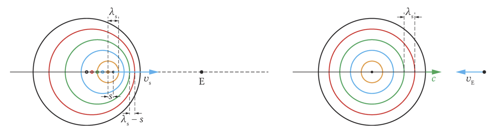

Der Dopplereffekt
Jedes Kind kennt den typischen, zunächst ansteigenden und dann sinkenden Ton, wenn ein Krankenwagen mit aktivierter Sirene vorbeifährt. Diesen Effekt bezeichnet man als Dopplereffekt. Man unterscheidet dabei zwei Hauptfälle:
1. Bewegter Sender, ruhender Empfänger
Ein Schallsender bewegt sich mit $v_S$ auf einen ruhenden Empfänger zu. Der Sender jagt seinen eigenen ausgesandten Wellenfronten hinterher, weshalb diese in Fahrtrichtung „zusammengeschoben“ werden. Der Empfänger hört eine verkürzte Wellenlänge $\lambda_E$ und somit eine höhere Frequenz $f_E$.

Die Ausbreitungsgeschwindigkeit $c$ im Medium bleibt konstant, nur die gemessene Wellenlänge ändert sich. Für die empfangene Frequenz gilt:
$f_E = f_S \cdot \frac{1}{1 \mp \frac{v_S}{c}}$
- Minus ($- \frac{v_S}{c}$): Annäherung $\rightarrow f_E > f_S$ (höher)
- Plus ($+ \frac{v_S}{c}$): Entfernen $\rightarrow f_E < f_S$ (tiefer)
2. Bewegter Empfänger, ruhender Sender
Jetzt bewegt sich der Empfänger mit $v_E$ auf einen ruhenden Sender zu. Hierbei bleibt die räumliche Wellenlänge $\lambda_S$ völlig unbeeinflusst und konstant. Dagegen ändert sich relativ zum Empfänger aber die Ausbreitungsgeschwindigkeit der Wellenfronten, weil er ungebremst in sie „hineinfährt“ ($c_E = c + v_E$).
Da die Wellenlänge $\lambda_S$ konstant bleibt, die Relativgeschwindigkeit aber wächst, berechnet sich die empfangene Frequenz so:
$f_E = f_S \cdot \left(1 \pm \frac{v_E}{c}\right)$
- Plus ($+ \frac{v_E}{c}$): Annäherung $\rightarrow f_E > f_S$ (höher)
- Minus ($- \frac{v_E}{c}$): Entfernen $\rightarrow f_E < f_S$ (tiefer)
Wenn sich Sender und Empfänger gleichzeitig bewegen
Durch die Kombination der beiden Bewegungen ergibt sich für einen Empfänger ($v_E$) und einen Sender ($v_S$), die sich beide gleichzeitig in Bewegung befinden, eine kombinierte Gleichung.
Bewegen sich Empfänger und Schallquelle aufeinander zu oder voneinander weg, so werden beide Effekte multipliziert:
$f_E = f_S \cdot \frac{1 \pm \frac{v_E}{c}}{1 \mp \frac{v_S}{c}}$
Das obere Vorzeichen steht stets für eine Annäherung, das untere für eine Entfernung. Für langsame Geschwindigkeiten ($v \ll c$) gilt näherungsweise: $\Delta f \approx f_S \cdot \frac{v_S}{c}$.
Der Überschallknall
Kreuzt ein Flugzeug den Himmel mit Überschallgeschwindigkeit ($v > c$), so hat es den ersten und alle weiteren ausgesendeten Wellenberge bereits überholt.
Die ausgesandten Wellenberge besitzen eine gemeinsame Einhüllende – den sogenannten machschen Kegel. An allen Stellen am Boden, über die dieser V-förmige Mantel hinwegstreicht, hört man wegen der massiven konstruktiven Interferenz aller Wellenberge einen explosionsartigen Knall.
Tatsächlich „schleppt“ das Flugzeug seinen Knall auf dem Mantel dieses Kegels dauernd hinter sich her und erzeugt ihn umgangssprachlich gesehen nicht nur ein einziges Mal beim „Durchbrechen“ der Schallmauer.

Entstehung des Machkegels bei Überschall ($v > c$).
Der ungedämpfte elektromagnetische Schwingkreis
Nun wechseln wir von den mechanischen Wellen und Schwingungen zur Elektrodynamik und Induktion. Ein klassischer elektromagnetischer Schwingkreis (LC-Schwingkreis) besteht aus einem Kondensator (Kapazität $C$) und einer Spule (Induktivität $L$).

Lädt man den Kondensator auf und schließt ihn an die Spule an, kommt es zu einem fortwährenden Energieaustausch zwischen dem elektrischen Feld des Kondensators und dem magnetischen Feld der Spule.
Im elektromagnetischen Schwingkreis kommt es zu Schwingungen der am Kondensator anliegenden Spannung und der Stromstärke durch den Kreis. Diese beiden Schwingungen sind zeitlich stets um 90° phasenverschoben.
Die Differenzialgleichung (DGL)
Über den Maschensatz ($U_C + U_L = 0$) ergibt sich folgende Differenzialgleichung der ungedämpften Schwingung:
$\ddot{Q}(t) = - \frac{1}{L \cdot C} \cdot Q(t)$
Als Lösungsfunktion dieser Gleichung bietet sich die Cosinusfunktion an, da diese – bis auf das negative Vorzeichen und den nach Kettenregel entstehenden inneren Faktor $\omega$ – absolut ihrer zweiten Ableitung entspricht. Mit dem Ansatz $Q(t) = \hat{Q} \cdot \cos(\omega \cdot t)$ erhält man:
- $\dot{Q}(t) = - \omega \cdot \hat{Q} \cdot \sin(\omega \cdot t)$
- $\ddot{Q}(t) = - \omega^2 \cdot \hat{Q} \cdot \cos(\omega \cdot t)$
Durch Einsetzen in die DGL erhält man letztlich $\omega^2 = \frac{1}{L \cdot C}$, woraus sich für die Frequenz $f$ und die Periodendauer $T$ direkt folgendes ergibt:
$f = \frac{1}{2 \pi} \cdot \frac{1}{\sqrt{L \cdot C}} \quad \text{bzw.} \quad T = 2\pi\sqrt{L \cdot C}$
Der gedämpfte Schwingkreis
Bei einem idealen Federschwinger (wie auf dem Papier) würde das System ewig schwingen. Real nimmt die mechanische Amplitude aber aufgrund der Reibungsverluste mit der Zeit ab. Analog dazu nimmt auch beim elektrischen Schwingkreis die Amplitude im Laufe der Zeit durch den ohmschen Eigenwiderstand $R$ der Schaltung ab.

Dem Schwingkreis wird regelmäßig von außen durch einen Rechteckgenerator neue Energie zugeführt, sodass die Maxima periodisch neu starten und sichtbar bleiben.
Exkurs: DGL der gedämpften Schwingung
Da nun auch der ohmsche Widerstand $R$ betrachtet werden muss, fällt auch an diesem eine Spannung $U_R = R \cdot I(t)$ ab. Die Maschengleichung ändert sich zu $U_C + U_L = U_R$. Eingesetzt führt dies zur charakteristischen DGL:
$\frac{1}{C} \cdot Q(t) + L \cdot \ddot{Q}(t) + R \cdot \dot{Q}(t) = 0$
Die analytische Bestimmung ist hier mathematisch aufwendiger. Der klassische Lösungsansatz ist eine periodische Schwingung, die mit einer e-Funktion exponentiell staucht, also abflacht:
$Q(t) = \hat{Q} \cdot e^{-\delta \cdot t} \cdot \cos(\omega \cdot t)$
Hierbei ist $\delta = \frac{R}{2L}$ die sogenannte Dämpfungskonstante. Für die neue Kreisfrequenz $\omega$ ergibt sich (durch Einsetzen der Ableitungen):
$\omega = \sqrt{\omega_0^2 - \delta^2} = \sqrt{\frac{1}{L \cdot C} - \frac{R^2}{4L^2}}$
Die Gleichung ist erstaunlich: Sie zeigt, dass die Frequenz im gedämpften Fall (ohne äußeren Zwang) stets minimal geringer ist als im ungedämpften Idealfall ($\omega_0$).
Wird der Term unter der Wurzel ($\omega_0^2 - \delta^2$) null, ist der Widerstand genau so groß, dass es physikalisch gar nicht mehr zur Schwingung kommt, sondern nur zu einem exponentiellen Abfall der Ladung. Diesen kritischen Punkt nennt man aperiodischen Grenzfall. Wird $R$ noch größer, spricht man vom Kriechfall.

Typischer Versuchsaufbau mit Rechteckgenerator zum immer wiederkehrenden stupsenden „Anstoßen“ der gedämpften Schwingung (z.B. $L=2\text{mH}, C=1\mu\text{F}$).
Anregung von außen und die Resonanz
Was passiert, wenn man den Schwingkreis nicht nur einmalig auflädt (und dann abklingen lässt), sondern eine stetige, sinusförmige Wechselspannung als Zwang (Erreger) von außen anlegt? Man ersetzt den Rechteckgenerator durch einen regelbaren Sinusgenerator. Zur Beobachtung misst man sodann die Stromstärke im Kreis in Abhängigkeit zur extern angelegten Erregerfrequenz.

Nach einer kurzen Einschwingzeit ergibt sich eine ungedämpfte Schwingung im LC-Glied, deren Frequenz mit der des Sinusgenerators zwangsläufig übereinstimmt. Trägt man die maximal gemessene Stromstärke über der Frequenz systematisch auf, erhält man eine Resonanzkurve.

Die oben visualisierte Kurve besitzt ein massiv steiles Maximum. Dieses ist umso radikaler und ausgeprägter, je kleiner der dämpfende Widerstand $R$ im Kreis gewählt wird. Die zugehörige Frequenz, bei der dieses Schwingungsmaximum auftritt, entspricht genau der sogenannten Eigenfrequenz des Systems, kalkulierbar durch die thomsonsche Schwingungsgleichung.
Die erzwungene kapazitive bzw. induktive Schwingung innerhalb des LC-Glieds hinkt im genauen Resonanzfall der von außen angelegten Erregerspannung um eine präzise Viertel-Periode (90° Phasenverschiebung) hinterher.
Die Resonanzkatastrophe
Wird ein zu Eigenschwingungen fähiger Wellenträger mit genau seiner idealen Eigenfrequenz von außen angeregt, so tritt Resonanz ein. Diese Resonanz tritt aber nicht nur elektrisch auf. Wird ein mechanischer Aufbau (wie eine Hängebrücke) dauerhaft mit seiner kritischen Eigenfrequenz angeregt, wachsen die Schwingungsbäuche durch die ständig gepumpte Energiezufuhr ungebremst ins fast grenzenlose an.
Die nagelneue Brücke musste bereits 3 Tage nach der feierlichen Eröffnung im Jahr 2000 aufgrund gefährlicher Resonanzkatastrophen durch den im Gleichtakt marschierenden Menschenstrom geschlossen werden. Erst nach Einbau massiver und aufwendiger Flüssigkeitsdämpfer durfte die verhasste "Wackelbrücke" wieder gefahrlos betreten werden.
Damit Konstrukte wie Brücken intakt bleiben, darf eine Eigenschwingung immer nur soweit aufschaukeln, bis die in der Periode hineingesteckte Energie gleich groß ist wie die an Dämpfungssysteme abgegebene Verlust-Energie.